-
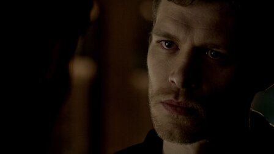
1. Always and Forever
After centuries away, vampire-werewolf hybrid Klaus returns to the French Quarter of New Orleans to find it taken over
by his former protégé, Marcel.
-
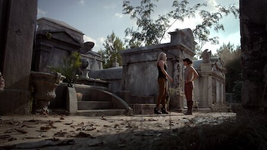
2. House of the Rising Son
When Rebekah arrives in New Orleans at her brother Elijah's request, she worries that Klaus is up to no good and asks
Sophie for help.
-
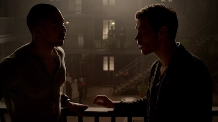
3. Tangled Up in Blue
With the help of a reluctant Sophie, Klaus and Rebekah join forces to bring down Marcel's empire from within, despite
Elijah's concerns.
-
4. Girl in New Orleans
Rebekah is determined to get to the bottom of a strange encounter with Elijah, while Marcel lets Davina out for a night
at the music festival.
-
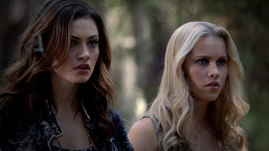
5. Sinners and Saints
When Rebekah arrives in New Orleans at her brother Elijah's request, she worries that Klaus is up to no good and
asks
Sophie for help.
-
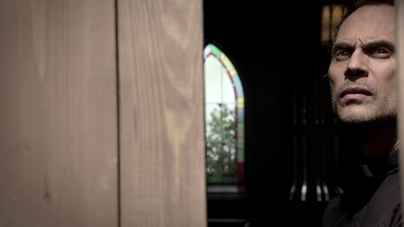
6. Fruit of the Poisoned Tree
When Rebekah arrives in New Orleans at her brother Elijah's request, she worries that Klaus is up to no good and
asks
Sophie for help.
-
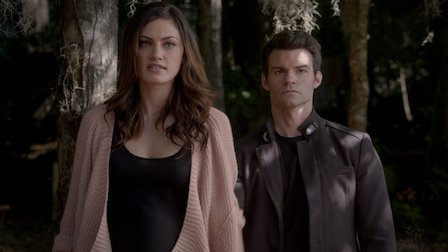
7. Bloodletting
When Rebekah arrives in New Orleans at her brother Elijah's request, she worries that Klaus is up to no good and
asks
Sophie for help.
-
8. The River in Reverse
Rebekah turns to Father Kieran for guidance, Elijah is troubled by his falling out with Klaus, and Marcel uncovers
disturbing information.
-
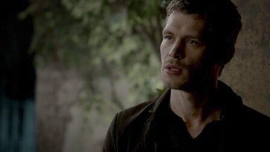
9. Reigning Pain in New Orleans
Cami is disturbed by what she learns of Klaus's past, while Hayley, Elijah and Rebekah investigate a plan to harm
werewolves in the bayou.
-
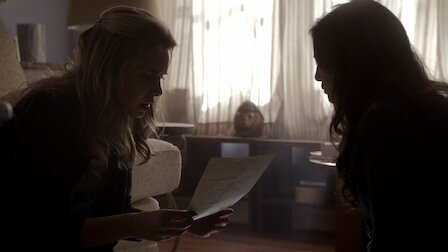
10. The Casket Girls
Elijah and Marcel form an unlikely alliance as Klaus takes steps to get Davina back, and Hayley is forced to make a
difficult decision.
-
11. Après Moi, Le Déluge
Sophie approaches the others with some startling information about the Harvest Festival and presents a plan to save
Davina, who is violently ill.
-
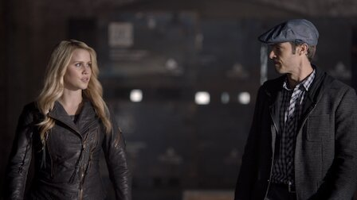
12. Dance Back from the Grave
Marcel refuses to help Klaus when a gruesome discovery is made, and Rebekah recognizes the remnants of a sacrifice as
the work of a dangerous warlock.
-
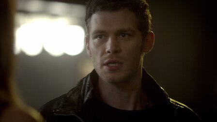
13. Crescent City
Father Kieran has a run-in with a witch from his past, while someone from Rebekah and Marcel's past threatens to expose
their long-buried secrets.
-
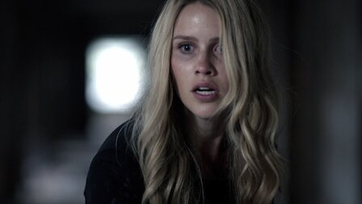
14. Long Way Back from Hell
Rebekah is locked up in the sanatorium and discovers a revenge-seeking witch is back, and Elijah makes a decision that
endangers Klaus and Rebekah.
-
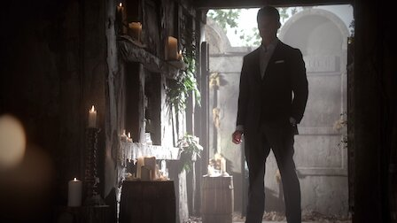
15. Le Grand Guignol
Back in 1919, Klaus reveals details of a devastating secret, Elijah and Monique form an alliance, and Marcel and Rebekah
scheme against the witches.
-
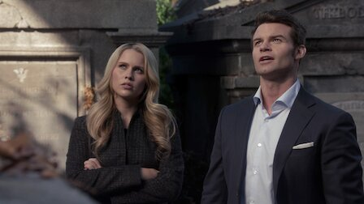
16. Farewell to Storyville
Tensions build between Klaus, Elijah and Rebekah when they are trapped together in the City of the Dead cemetery by a
witch's spell.
-
17. Moon over Bourbon Street
Elijah makes a power-grabbing move after accusing Klaus of inaction, and the Mikaelsons throw an extravagant party in an
attempt to bring peace.
-
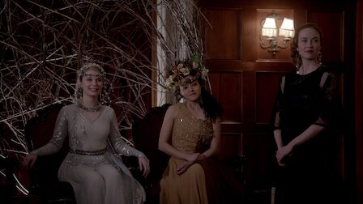
18. The Big Uneasy
Elijah focuses on restoring the family home to its former glory, angering Klaus, who sets a new plan in motion using a
werewolf from his own line.
-
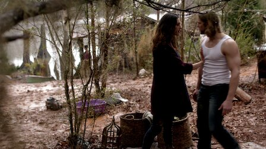
19. An Unblinking Death
Klaus and Elijah disagree about how to handle the Crescent Wolves, and a violent explosion in the bayou deepens the
divide between the communities.
-
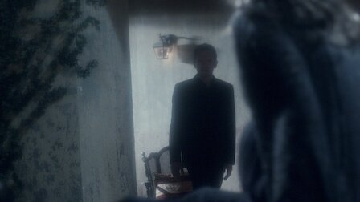
20. A Closer Walk with Thee
Hayley confronts a surprising enemy as she and her unborn baby fall into peril during a celebratory wake to honor a
fallen member of the community.
-
21. The Battle of New Orleans
Klaus and Elijah enact a plan to change the fates of Hayley and the werewolf community, forcing Marcel to rally an army
to regain control of the city.
-
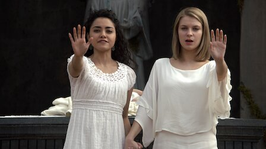
22. From a Cradle to a Grave
Klaus and Elijah search for Hayley as her due date nears, while Francesca meets with Oliver and Jackson about the
werewolves' future in New Orleans.